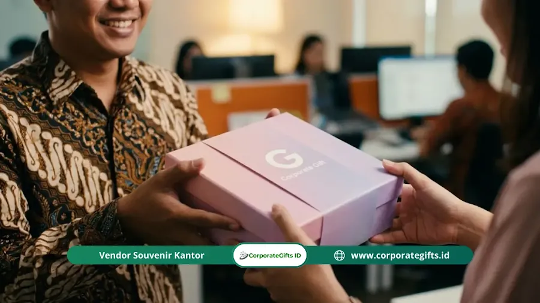

Corporate Gifts ID - Hampers valentine untuk karyawan adalah paket cinderamata apresiasi yang dihadirkan institusi bisnis kepada para anggota tim di momentum pertengahan Februari. Paket ini umumnya memadukan kudapan gourmet bermutu, gawai penunjang kerja, botol minum minimalis, serta paket kebugaran (wellness kit) yang dikemas dalam sentuhan visual netral agar tetap mengedepankan etika profesional.
Pernahkah Anda memperhatikan dinamika suasana kantor menjelang tanggal 14 Februari? Sebagian karyawan mungkin merencanakan agenda pribadi, namun sebagian besar staf Anda tetap berkutat dengan lembar kerja, target penjualan, dan tenggat waktu kuartal pertama (Q1) yang menumpuk. Bagi para pemimpin divisi dan praktisi Human Resources (HR), momen ini adalah celah emas yang kerap terlewatkan untuk membangun kedekatan emosional (employee engagement).
Poin Kunci Hampers Valentine Karyawan:
- Framing Inklusif: Memposisikan momen sebagai Employee Appreciation Day untuk menghargai dedikasi seluruh anggota tim secara adil dan universal.
- Sentuhan Visual Netral: Menghindari warna merah muda mencolok atau bentuk hati klise; beralih ke palet korporat matang seperti sage green, terracotta, dan navy.
- Dampak Retensi Talenta: Validasi emosional di tengah tekanan target kuartal awal mencegah kejenuhan kerja (burnout) serta menurunkan kecenderungan pergantian staf (turnover).
- Kesesuaian Anggaran Fleksibel: Tersedia opsi mulai dari kudapan artisan ekonomis hingga perangkat elektronik terintegrasi dalam kotak kaku mewah.
Peluang Emas Employee Engagement di Bulan Februari
Banyak pengelola korporasi beranggapan bahwa perayaan apresiasi hanya sah diberikan pada momen hari raya keagamaan seperti Idulfitri atau seremoni penutupan tahun. Sebagaimana telah diulas dalam pedoman hampers akhir tahun yang elegan dan filosofi makna memberikan souvenir Imlek, apresiasi yang datang di momen tak terduga justru memberikan resonansi emosional yang jauh lebih mendalam.
Februari kerap menjadi bulan transisi yang berat. Antusiasme awal tahun mulai tergerus oleh rutinitas harian yang padat. Hadiah kejutan di meja kerja membuktikan bahwa pimpinan perusahaan tidak sekadar memandang staf sebagai angka pencapaian laba, melainkan sebagai individu yang layak dihargai keringatnya.
Menjaga Koridor Profesionalisme Tanpa Canggung
Memberikan hadiah bernuansa kasih sayang di tempat kerja memang memerlukan kehati-hatian ekstra. Tanpa perencanaan matang, inisiatif ini bisa disalahartikan sebagai gestur romantis yang canggung, atau lebih buruk lagi, memicu prasangka favoritisme bila tidak dibagikan secara merata.
Kunci keberhasilannya terletak pada kurasi item fungsional dan pemilihan kata pada kartu ucapan. Hadiah harus berorientasi pada kenyamanan kerja, kesehatan fisik, atau relaksasi santai, bukan ranah intim personal.
4 Ide Hampers Valentine yang Aman, Netral, dan Berkesan
Hindari buket mawar segar yang cepat layu dan tidak memiliki nilai guna praktis. Alihkan fokus Anda ke empat kurasi tema berikut:
1. The Caffeine Survival Kit
Bagi pekerja modern, kopi berkualitas adalah amunisi utama produktivitas. Susun paket berisi biji kopi sangrai lokal (artisan drip coffee) yang dipadukan dengan smart tumbler stainless berpenjaga suhu dan kukis renyah garam laut (sea salt cookies). Paket ini menyampaikan pesan tulus: "Kami menghargai kerja keras Anda, silakan nikmati jeda kopi terbaik ini."
2. Paket Anti-Burnout (Wellness & Relaxation Kit)
Menjaga kesehatan mental dan fisik staf merupakan bentuk kepedulian tingkat tinggi. Isi kotak hampers dengan pengharum ruangan aroma terapi (reed diffuser aroma green tea atau lavender), teh herbal kamomil penenang pikiran, masker mata sutra untuk istirahat optimal, serta voucher relaksasi pijat refleksi.
3. Desk Decor & Productivity Booster
Area meja kerja yang rapi dan berestetika terbukti meningkatkan konsentrasi staf. Hadirkan alas meja berbahan kulit sintetis (desk mat) dengan logo perusahaan terukir tipis, pot keramik berisi tanaman sukulen mini, pulpen metal eksklusif, serta buku agenda kerja tak bertanggal yang fleksibel dipakai kapan pun.
4. Snack Tower "Jajan Sore Gourmet"
Kudapan lezat selalu berhasil mencairkan suasana tegang menjelang sore hari. Rancang kurasi camilan premium khas lokal yang telah dikurasi higienis, seperti kacang almond panggang madu, keripik artisan renyah, dan cokelat hitam rendah gula (dark chocolate) dalam kemasan kotak kaku beraksen pita pastel.

Pengemasan bertema earthy dan minimalis menghadirkan kesan mewah tanpa menyentuh batas romantis yang canggung.
Tabel Strategi Budget: Dari Low Budget hingga Paket Eksekutif
Program employee appreciation tidak harus membebani anggaran operasional korporasi. Berikut panduan alokasi biaya berjenjang yang dirancang sesuai tingkatan skala organisasi:
| Tingkatan Anggaran | Estimasi Biaya per Paket | Komposisi Item Rekomendasi | Kesan Psikologis Penerima |
|---|---|---|---|
| Ekonomis (Massal) | Di bawah Rp50.000 / staf | Satu toples mini cookies artisan, sebatang cokelat dark lokal, dikemas kantong blacu atau kain furoshiki ramah lingkungan. | Perhatian manis yang hangat, sederhana, dan tidak terasa berlebihan bagi tim besar. |
| Menengah (Medium Tier) | Rp100.000 - Rp250.000 / staf | Tumbler insulasi termal, paket drip bag coffee artisan, snack bar sehat, dan kartu ucapan pesan khusus dari manajer. | Apresiasi profesional berbobot dengan barang tahan lama yang dapat dipakai bertahun-tahun. |
| Eksekutif & Top Performer | Di atas Rp300.000 / staf | Gift set hardbox magnetik, power bank fast charging aluminium, speaker Bluetooth mini, diffuser aromaterapi, dan voucher belanja. | Penghormatan istimewa atas kontribusi strategis, memperkokoh loyalitas kepemimpinan masa depan. |
Rambu-Rambu Etika: Panduan Dos and Don'ts di Lingkungan Kerja
Agar niat tulus Anda tidak menimbulkan kesalahpahaman atau perbincangan negatif, terapkan tiga rambu etika mendasar berikut:
1. Hindari Visual Romantis Klise (Don't Over-Pink)
Tinggalkan pita berwarna merah menyala, balon hati, atau hiasan boneka. Pilihlah warna korporat bernuansa teduh seperti hijau sage, terakota hangat, abu-abu arang, atau biru navy. Visual yang bersahaja mencerminkan kematangan institusi.
2. Terapkan Prinsip Kesetaraan dan Transparansi
Bila Anda mengalokasikan program apresiasi untuk satu divisi kerja, pastikan seluruh anggota pada tingkatan yang sama memperoleh paket dengan nilai setara. Ketimpangan nilai hadiah di momentum publik rentan memicu kecemburuan sosial antarstaf.
3. Jauhi Barang-Barang Terlalu Pribadi
Hindari memberikan wewangian parfum karena aroma merupakan preferensi subjektif yang sangat personal. Hindari pula pakaian yang rawan salah ukuran atau perhiasan imitasi. Tetaplah berpegang teguh pada koridor kebutuhan kerja, nutrisi, atau kebugaran umum.
Strategi Logistik Distribusi WFO, Hybrid, dan Tim Remote
Bagi organisasi dengan pola kerja di kantor (WFO), meletakkan kotak hampers di atas meja kerja masing-masing staf sebelum jam masuk kantor pukul 08.00 pagi menciptakan efek kejut visual yang menyenangkan. Ruang kantor akan seketika dipenuhi energi positif dan keceriaan sejak menit pertama.
Namun bagi perusahaan berbasis kerja jarak jauh (remote atau WFH), koordinasi logistik harus dirancang minimal dua pekan sebelumnya. Pastikan data alamat pengiriman rumah telah tervalidasi dan percayakan pada mitra vendor yang memiliki fasilitas distribusi multi-alamat dengan pelacakan nomor resi otomatis secara transparan.
FAQ Seputar Hampers Valentine Karyawan
Kesimpulan dan Solusi Kurasi Hampers CorporateGifts.ID
Pada akhirnya, hampers valentine untuk karyawan bukan sekadar tentang seberapa mahal barang yang berada di dalam boks. Ini adalah pernyataan konkret dari manajemen bahwa di balik pencapaian target dan tenggat waktu yang ketat, sisi humanis staf Anda tetap dilihat, didengar, dan dihargai seutuhnya.
Jangan biarkan talenta terbaik Anda merasa kering apresiasi. Biaya merekrut karyawan baru jauh lebih besar daripada investasi sebuah paket cinderamata apresiasi di bulan Februari. Diskusikan rencana hampers apresiasi kantor Anda bersama konsultan berpengalaman di CorporateGifts.ID. Jelajahi katalog lengkap kami melalui halaman produk hampers atau mintalah penawaran resmi melalui formulir RFQ Corporate Gifts ID sekarang juga!

Ditulis oleh: Arinda Zakia
Senior Corporate Gifting SpecialistSpesialis strategi promosi korporat, kurasi merchandise B2B, dan optimasi ROI hadiah perusahaan di CorporateGifts.ID. Berpengalaman mendampingi ratusan instansi BUMN, perbankan, dan perusahaan multinasional dalam merancang cenderamata fungsional yang berkesan dan berdampak jangka panjang.
Lihat Profil Lengkap & Panduan Lainnya